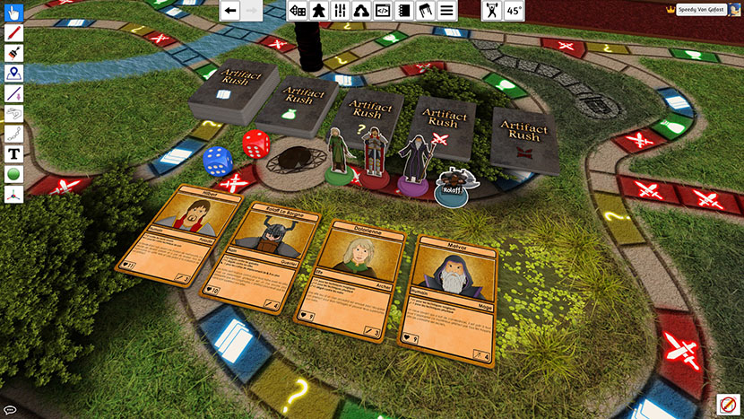
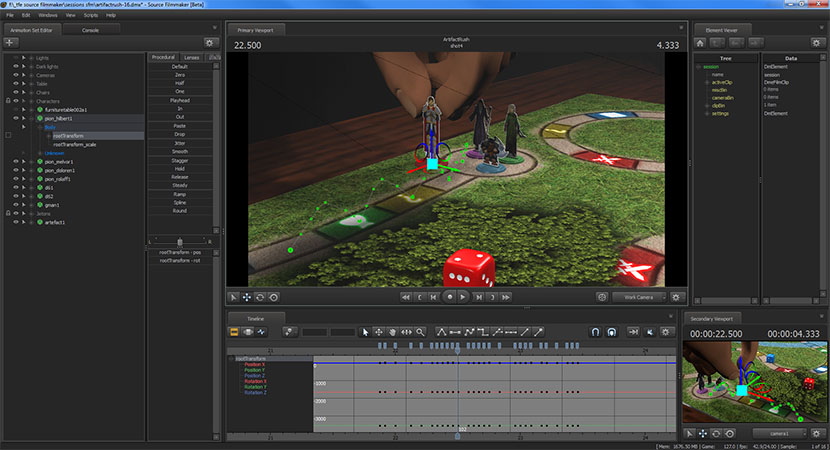
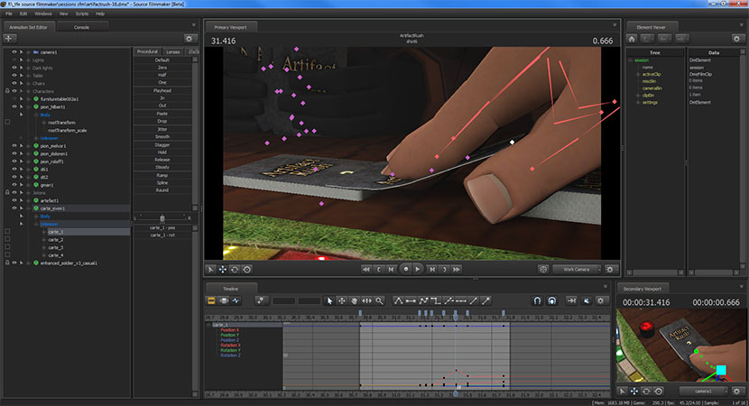
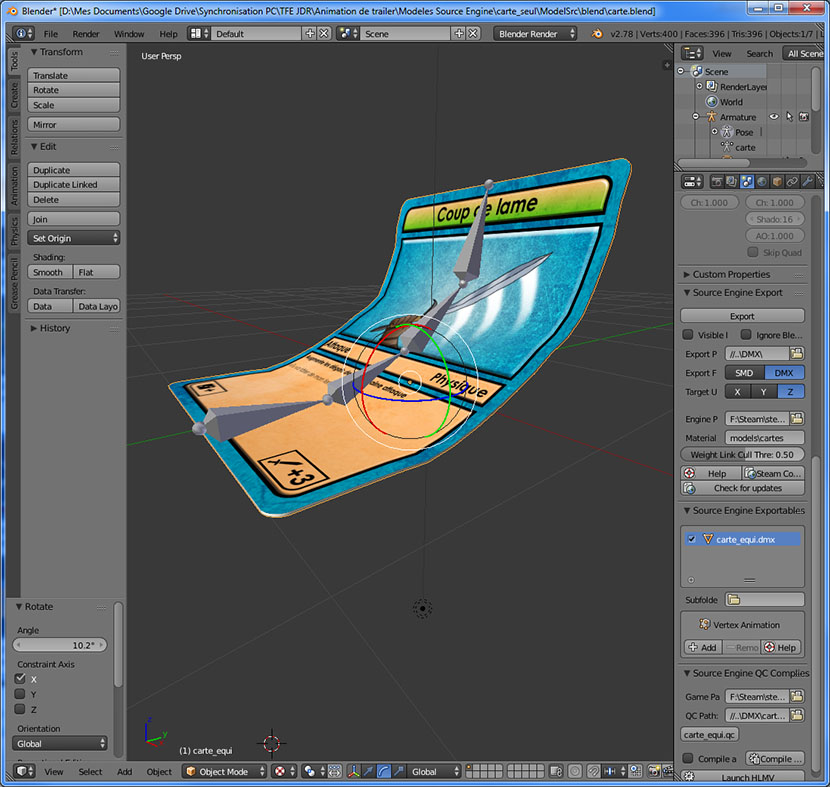
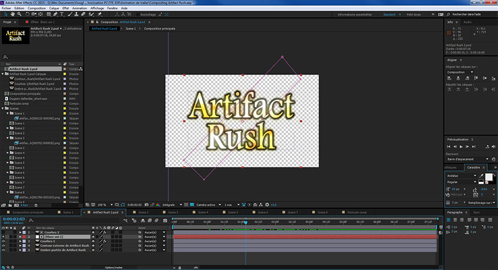
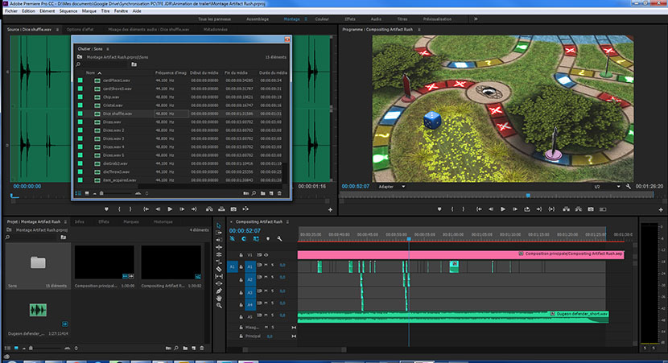

Une grande variété de cartes
Il existe plus de 40 variétés de cartes et de plus de 100 cartes pour tous les paquets confondus.
Des techniques, des équipements, des événements et les monstres.
Vivez l'aventure de quatre héros en quête vers l'acquisition de l'artéfact magique afin de sauver la race humaine. Le premier arrivé avec l'artéfact aura la gloire et la fortune du royaume.
Cependant, la récompense promise par le royaume pousse à la rivalité entre ces aventuriers.
Parcourez ces terres périlleuses, trouvez des techniques et équipements, faites faces aux monstres et événements dangereux et ramenez l'artéfact.
Il existe plus de 40 variétés de cartes et de plus de 100 cartes pour tous les paquets confondus.
Des techniques, des équipements, des événements et les monstres.
Entre 30 et 60 minutes de session de jeu voir même plus si l'aventure s'avère plus laborieuse.
Chaque joueur joue son propre personnage avec ses traits uniques et sa propre histoire.
Adobe Photoshop
Adobe Photoshop
Photoshop et Blender
Tabletop Simulator
Blender et Source Filmmaker
After Effect et Premiere Pro
Si vous possédez Tabletop Simulator, jouez-y dès maintenant en visitant la page Workshop du jeu!
La conception de mon plateau s'est faite en plusieurs étapes, d'abord j'ai créé les cases à l'aide d'Adobe Illustrator pour avoir de belles courbes tout au long des cases. Ensuite à l'aide de Blender, j'ai fait un rendu de l'herbe sur un fond transparent dont j'ai ensuite dupliqué sur tout le chemin pour avoir un résultat homogène et bien intégré au décor.
Tabletop Simulator est un simulateur de jeu de société qui permet d'importer ses propres créations. Les jeux fonctionnent sans script, tout se joue manuellement comme dans la vraie vie en manipulant chaque objet physique manuellement.
Ensuite, sur Blender, j'ai ajusté l'épaisseur de l'illustration et modélisé le socle où elle sera posée.
L'animation est réalisée à l'aide de Source Filmmaker, un programme purement destiné à l'animation 3D qui exploite le Source Engine utilisé dans les jeux vidéo tel que Half-Life 2, Team Fortress 2 et d'autres jeux créés par Valve.
Si j'ai choisi Source Filmmaker, c'est parce que c'est le programme d'animation que j'ai le plus utilisé et qu'il à des modèles de personnages 3D libre de droit dont j'ai exploité dans mon animation de présentation sous l'accord de mon professeur.
C'était sans doute l'étape la plus laborieuse de mon projet, car il fallait que je convertisse chacun de mes modèles 3D et mes textures dans un format compatible avec le Source Engine.
L'assemblage et le compositing sont faits à l'aide d'Adobe After Effect. Le montage sonore ainsi que le rendu final sont faits grâce à Adobe Première Pro.
Le gros avantage avec ces deux programmes est le fait qu’ils peuvent gérer les fichiers d’un autre, par exemple j’ai pu utiliser mes montages sur After Effect directement dans Première Pro sans devoir faire de rendu ou quoi que ce soit et les modifications effectuées sur After Effect sera automatiquement prise en compte sur Première Pro. Ce qui donne un gain de temps considérable et empêche une perte de qualité due a un double rendu.
